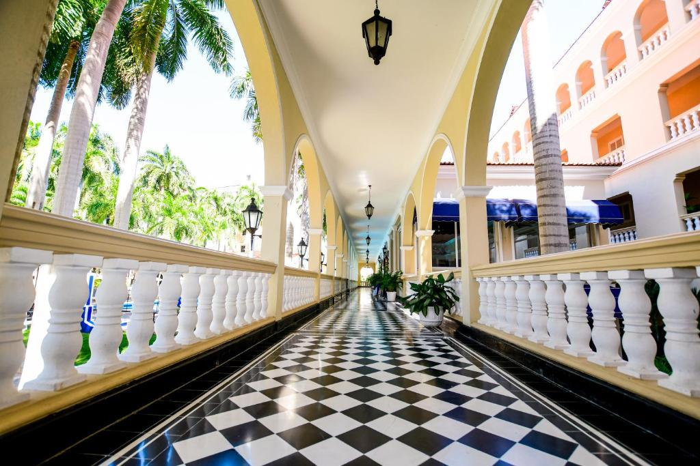

Los Fantasmas del Hotel El Prado
Paranormal / Relatos y leyendas urbanas

La historia
En el tradicional barrio El Prado de Barranquilla se encuentra uno de los edificios más emblemáticos de la ciudad: el Hotel El Prado. Su arquitectura republicana, sus amplios corredores, sus jardines y su larga trayectoria han convertido este lugar en un símbolo de la memoria histórica y cultural del Caribe colombiano.
Sin embargo, alrededor de su historia también surgieron rumores sobre supuestas apariciones y fenómenos paranormales. Las versiones comenzaron a circular con mayor fuerza en septiembre de 2022, cuando un creador de contenido publicó una historia en Instagram en la que mencionaba que buscaría fantasmas dentro del establecimiento.
La publicación generó comentarios y especulaciones entre los usuarios de las redes sociales. Algunos relatos hablaban de supuestas presencias en sectores del hotel, especialmente en espacios antiguos y zonas poco concurridas. Estas versiones alimentaron la curiosidad de quienes sienten fascinación por los misterios y las historias sobrenaturales de Barranquilla.
Ante la situación, la administración del Hotel El Prado publicó un comunicado en septiembre de 2022 en el que rechazó las afirmaciones sobre supuestos fantasmas en sus instalaciones y aclaró que no existían evidencias de actividad paranormal en el establecimiento.
El episodio despertó el interés de los medios de comunicación y convirtió al hotel en protagonista de una curiosa polémica relacionada con el misterio, las redes sociales y las leyendas urbanas de la ciudad.
Un hotel lleno de historia
Más allá de los rumores, el Hotel El Prado posee una historia que merece ser conocida. Su construcción comenzó en 1927 y fue inaugurado en 1930. Desde entonces, se convirtió en uno de los establecimientos hoteleros más representativos de Colombia y en un referente arquitectónico de Barranquilla.
Su arquitectura, sus espacios tradicionales y su importancia para el desarrollo turístico de la ciudad han contribuido a crear una atmósfera particular. Para muchos visitantes, recorrer sus instalaciones es también acercarse a una parte importante de la historia de Barranquilla.
Entre la historia y el misterio
¿Existen realmente fantasmas en el Hotel El Prado? Hasta el momento, no existen pruebas verificables que demuestren la presencia de fenómenos sobrenaturales en sus instalaciones. Lo que sí está documentado es la controversia de 2022 y la respuesta pública de la administración del hotel.
Esta historia demuestra cómo un edificio histórico puede convertirse en escenario de rumores, especulaciones y relatos que despiertan la imaginación colectiva. En Archivos Misteriosos, el caso se presenta como parte de las historias urbanas que alimentan la fascinación por lo desconocido en el Caribe colombiano.
Fuentes
Caracol Radio. (2022). ¿Por qué el hotel El Prado en Barranquilla negó la presencia de fantasmas?
Consultar fuenteEl Heraldo. (2022). Hotel El Prado desmiente que haya fantasmas en sus instalaciones.
Consultar fuenteHotel El Prado. Historia institucional del establecimiento.
Consultar sitio oficial